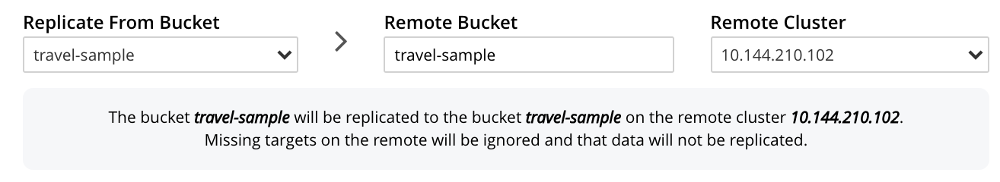
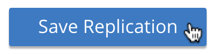
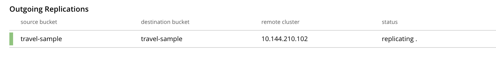

Create a Replication
An XDCR replication allows data to be replicated continuously from a specified bucket on the source cluster to a specified bucket on the target.
Understanding Replications
An XDCR replication is created on the cluster that is to be the source of the data-replication. Each replication uses a single reference, which has already been created. (See Create a Reference.) To create the replication, you specify:
-
The local, source bucket from which data is to be replicated; and, potentially, the scopes and collections within that bucket.
-
The remote cluster to which data is to be replicated. This cluster must already be registered on the local cluster as a reference.
-
The bucket on the remote cluster to which data is to be replicated; and, potentially, the scopes and collections within that bucket.
-
Whether filtering should be used in replication, and if so, according to what regular expression.
-
Other Advanced Replication Settings, which can be used to optimize replication-performance.
Note that multiple replications (each using a different source-target bucket combination) can be created using a single reference (which refers to a target cluster, but not to any specific bucket on it).
Examples on This Page
The examples in the subsections below show how to create the same replication; using the UI, the CLI, and the REST API respectively. As their starting-point, the examples assume the scenario that concluded the page Create a Reference, this being:
-
Two clusters already exist; each containing a single node. These are named after their IP addresses:
10.144.210.101and10.144.210.102. -
Each cluster contains a single bucket, which is the
travel-samplebucket. -
Each cluster has the Full Administrator username of
Administrator, and password ofpassword. -
Cluster
10.144.210.101now has a reference that specifies its owntravel-samplebucket as a source, and thetravel-samplebucket on10.144.210.102as a target.
Create an XDCR Replication with the UI
Proceed as follows:
-
Access Couchbase Web Console. Left-click on the XDCR tab, in the left-hand navigation menu.

This displays the XDCR Replications screen, the lower part of the main panel of which is entitled Outgoing Replications:

The list, which is designed to show the name and IP address or hostname of each existing replication, is currently empty, and so bears the notification
There are currently no replications defined. Use ADD REPLICATION to set one up. -
To start creating a replication, left-click on the ADD REPLICATION button:
The XDCR Add Replication screen is now displayed:

The fields in the upper area of the screen — Replicate From Bucket, Remote Bucket, and Remote Cluster — allow a replication to be defined that specifies source and target bucket only. The remaining fields allow scopes and collections — within source and/or target buckets — to be additionally specified; and allow Advanced Settings to be used.
The example on this page will not configure Advanced Settings; and will specify source and target bucket only — each bucket being specified as the sample bucket
travel-sample.Note that since the data within
travel-sampleis contained within multiple scopes and collections, the path to each collection — known as a keyspace, and always being of the formscope-name.collection-name— is necessarily identical on each cluster. XDCR’s default behavior is always to replicate data between corresponding keyspaces: for example, data ininventory.airlineon the source is replicated toinventory.airlineon the target. When a keyspace on the source does not have a corresponding keyspace on the target, XDCR’s default behavior is not to replicate data from that source keyspace. This is known as replication by implicit mapping.Detailed examples of explicitly specifying scopes and collections (and so, potentially, establishing mappings between dissimilar keyspaces) are provided later, in Replicate Using Scopes and Collections.
Note that when a replication is defined only as bucket to bucket (as in the current example), and thereby makes no reference to a scope or collection, the documents to be replicated are understood by XDCR to reside in the
_defaultcollection, which resides within the_defaultscope, of the source bucket. The documents will duly be replicated to the_defaultcollection, in the_defaultscope, of the target bucket. For more information , see Default Scope and Collection.An account of Advanced Settings is provided in Advanced Replication Settings with the UI, below.
The practical steps required for establishing filters are explained in Filter a Replication.
-
Enter appropriate information into the upper fields of the Add Replication screen. Specify
10.144.210.102as the target cluster, andtravel-sampleas both source and target bucket. The fields in the upper area of the screen now appear as follows. -
Left-click on the Save Replication button, at the bottom of the screen:
The XDCR Replications screen is now redisplayed, with the appearance of the Outgoing Replications panel as follows:
This indicates that a replication is now in progress: from
travel-sampleon this cluster, totravel-sampleon cluster10.144.210.102.
This concludes creation of the replication. Note that by left-clicking on the row for the replication, additional controls can be displayed:
Use of the Pause control is described in Pause a Replication; use of the Delete control in Delete a Replication; and use of the Edit control in Editing Filters.
Monitor Current Replications
All current replications can be monitored, by left-clicking on the XDCR Stats tab, at the left of the XDCR Replications screen. The panel appears as follows.
For information on how to read the interactive charts now displayed, see Manage Statistics.
Advanced Replication Settings with the UI
Left-click on the Advanced Replication Settings control, in the Add Replication dialog. The UI expands vertically, to reveal the following:
The values displayed in the fields are defaults, which can be modified interactively, and saved: this may help in achieving optimal replication-performance. For details on the significance of each field, see the XDCR Reference.
Error Notifications
If, while a replication is in progress, errors occur, a notification appears adjacent to the status displayed on the row for the replication:
Left-click on the orange icon, to display a full account of problems:
Note that in this window, in Couchbase-Server versions 7.1 and later, a message such as the following may appear:
Performing PeerToPeer communication with the following VBs:[…].
This message may appear when XDCR is communicating with nodes during replication-startup, when cluster topology-changes are occurring, and possibly in other situations: the message is purely informational, and does not signify an error.
Create an XDCR Replication with the CLI
Staring from the scenario defined above, in Examples on This Page, use the CLI xdcr-replicate command to create an XDCR replication, as follows:
couchbase-cli xdcr-replicate -c 10.144.210.101 \ -u Administrator \ -p password \ --create \ --xdcr-cluster-name 10.144.210.102 \ --xdcr-from-bucket travel-sample \ --xdcr-to-bucket travel-sample \ --xdcr-replication-mode xmem
If successful, this provides the following response:
SUCCESS: XDCR replication created
For more information, see the complete reference for the xdcr-replicate command. Note that this includes descriptions of all flags that support the Advanced Settings, described above.
Create an XDCR Replication with the REST API
Starting from the scenario defined above, in Examples on This Page, using the REST API’s POST /controller/createReplication HTTP method and URI, create an XDCR reference as follows:
curl -v -X POST -u Administrator:password \ http://10.144.210.101:8091/controller/createReplication \ -d fromBucket=travel-sample \ -d toCluster=10.144.210.102 \ -d toBucket=travel-sample \ -d replicationType=continuous \ -d enableCompression=1
If successful, this provides the following response:
{"id":"82026f90f5f573b5e50ec8b7a7012ab1/travel-sample/travel-sample"}
For more information, see Creating a Replication. For information on REST-driven configuration of the Advanced Settings described above, see Managing Advanced Settings.
Next Steps
Once a replication has been defined and is therefore running, you can opt to pause it, in order to perform system maintenance. See Pause a Replication.